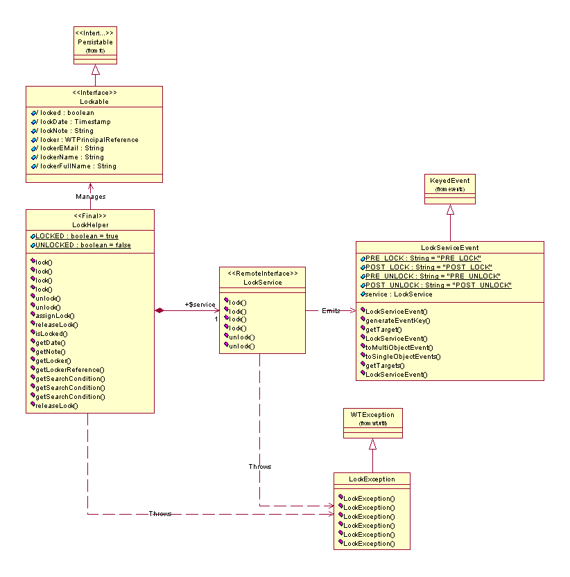

See: Description
| Interface | Description |
|---|---|
| Lockable |
Provides an abstraction of a plug-and-play component.
|
| LockService |
Provides an abstraction that specifies and promotes server-side functionality
as a service that's remotely available for use by a client.
|
| Class | Description |
|---|---|
| LockHelper |
Provides an abstraction as the API (Application Programming Interface)
to the lock services.
|
| LockServiceEvent |
Provides an abstraction of an extended keyed event used in conjunction
with the standard implementation of the server-side functionality as
defined by the LockService interface.
|
| StandardLockService |
Provides an abstraction of the standard implementation of server-side
functionality as defined by the LockService interface.
|
| Exception | Description |
|---|---|
| LockException |
Provides an abstraction of an abnormal occurrence or error in the usage
or processing of the locking service.
|
The locking service (wt.locks package) provides functionality to place and release in-memory and/or persistent locks on lockable objects. The persistent locks are not to be confused with database locks; they are two separate mechanisms.
Locking Service Model
The locking service is designed to be a plug and play component in the Windchill system, which is by default enabled to execute.
The locking service is intended to be used for both client and server development. Business objects, asserted as being lockable in the object model, can be locked and unlocked through the locking service's external interface. Once a business object is lockable, its lock can be seized to prevent concurrent access. Once the lock has been released, the business object is available to be locked again. A lockable object is not required to be locked prior to modification but, if it is locked, the lock is honored. The lock itself is a cookie that a lockable business object aggregates. The business object should not interact directly with the lock cookie, but instead operate on it through the locking service's external interface.
The Lockable interface provides an abstraction of a plug and play component. The intent is that, in an object model, a business object would assert that it is Lockable by inheriting (that is, it implements) the Lockable interface. With this assertion, the business object can then be locked and unlocked.
The LockHelper provides an abstraction as the API to the locking service. The API's methods can be categorized as either local or remote invocations. The local methods are getters of information, typically from cookies that are held in the business object. The remote methods serve as wrappers to a service that promotes server-side functionality.
The LockService provides an abstraction that specifies and promotes server-side functionality as a service that is available remotely for use by a client. The intent is that this interface defines all the necessary server-side functionality for locking. The LockServiceEvent provides an abstraction of a specialized keyed event used by the locking service to signal other services that a locking activity is about to begin or has occurred. This gives other services the opportunity in a plug and play architecture to act accordingly on these events. Validation, vetoing, and postprocessing are typical reactions to events.
The LockException provides an abstraction of an abnormal occurrence or error in the usage or processing of the locking service. This exception can be localized through a given resource bundle, and other exceptions can be nested within it. The most common occurrence of this exception is an attempt to lock or unlock a business object that is already locked or unlocked.
As specified by the locking service's standard access control rules, when an attempt is made to lock an object, if it is not already locked and the given principal has modify access to the object, then it is locked. If an attempt is made to unlock an object that is already locked and the given principal has administrative access, or the given principal is the one who originally placed the lock and has modify access to the object, then it is unlocked. Otherwise, an exception is thrown indicating the failure. Additionally, when a lock is placed on an object by a principal, that user or group is the only principal able to then modify the object while it is in a locked state.
Please note: For a Workable object,the Workable functionality overrides the Lockable functionality.
Event-based processing is performed on business objects asserted as being lockable during [preparation for] database modifications and full restorations. When a business object is [prepared for] being modified in the database, the locking service listens to a dispatched event indicating that the modify is about to begin and vetoes it if the business object is locked and the current session's principal is not the one who originally placed the lock. Otherwise, the modification is allowed to take place. Therefore, it is valid to modify a business object that is lockable if it is not locked. When a business object is being fully restored from the database, the locking service listens to a dispatched event indicating that the full restoration is beginning and restores the principal who holds the lock in the business object's lock cookie.